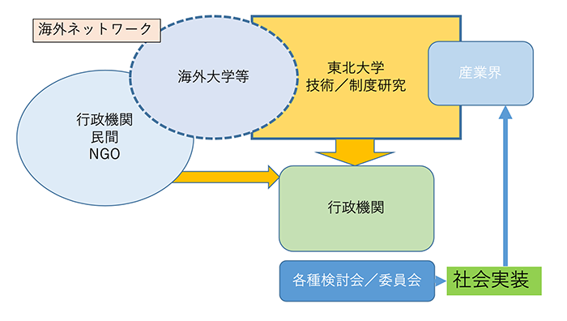
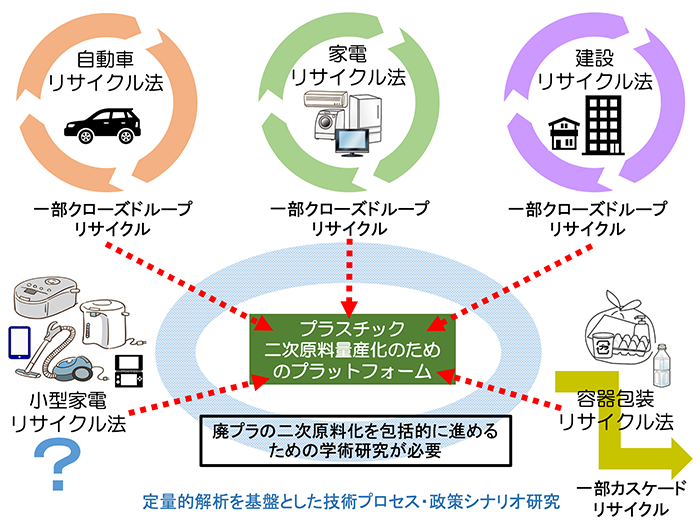

Research content
Research into new separation and decomposition methods, management techniques, and evaluation techniques
In doing so, we aim to utilize the characteristics of this endowed chair, its closeness to industry, and our overseas network to research realistic solutions that can actually be implemented in society.

(1) Introduction of an example of current research
With the core academic question of our research being "What is a sustainable and optimal plastic recycling system?", we are conducting research to develop a secondary plastic raw material market and establish a new resource circulation system using small home appliances as an example.

（2）Other ongoing research (collaborations with other institutions and laboratories)
- Halogenated plastics mixed into the plastic flow
- Small LiBs mixed in waste and secondary raw materials
- Consideration of a total network from collection to recycling of waste PV panels
- Collection of resource waste from general waste in the region
(3) Introduction of past research
From FY2017 to FY2019, we carried out the "Commissioned Research on Establishing a Recycling System for Rare and Other Useful Metals," a Miyagi Prefecture university collaboration project.
To build a Miyagi-style small home appliance recycling system, we analyzed the prefecture's resource flow, waste treatment infrastructure, and resource endowments, and visualized and analyzed plastics using a geographic information system (GIS). We also participated in a demonstration test of used small home appliance collection conducted in the prefecture, and analyzed the actual situation of used small home appliances discharged as non-burnable waste and bulky waste in general waste.